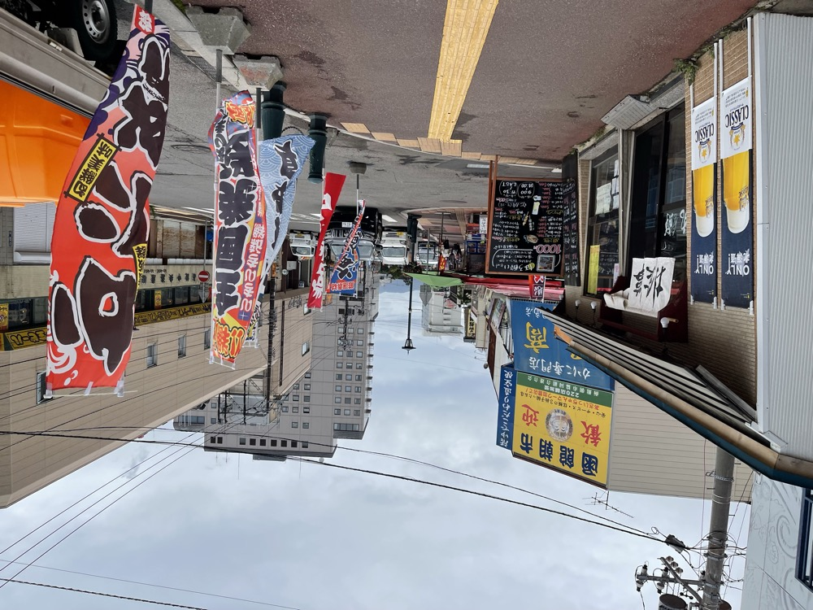
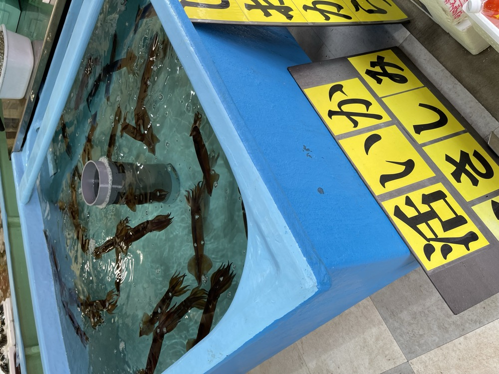
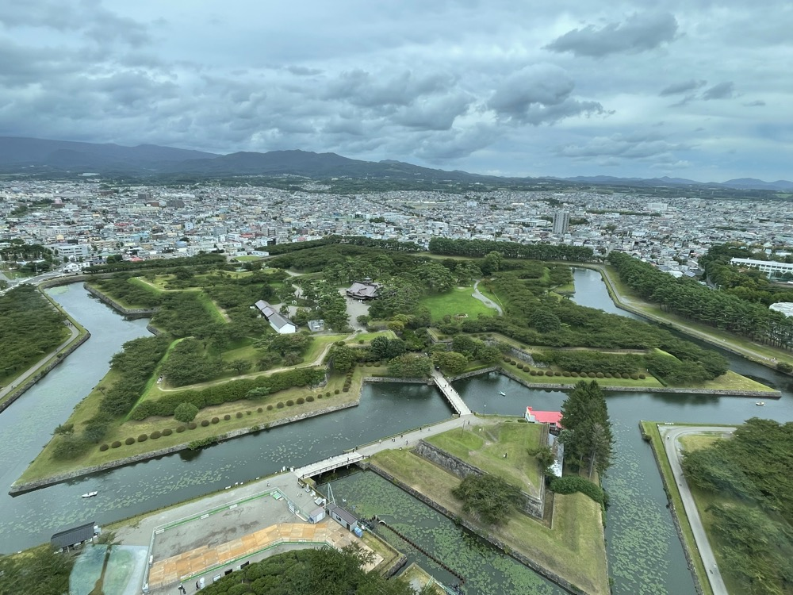
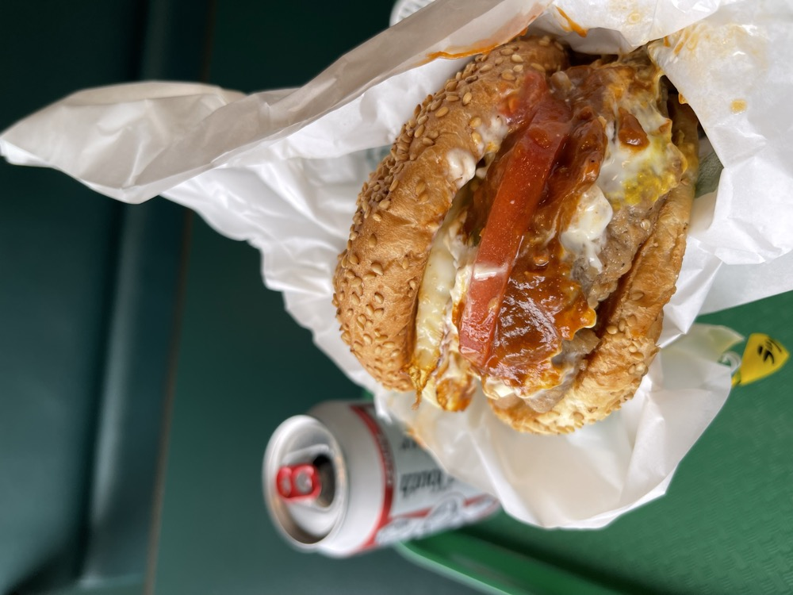
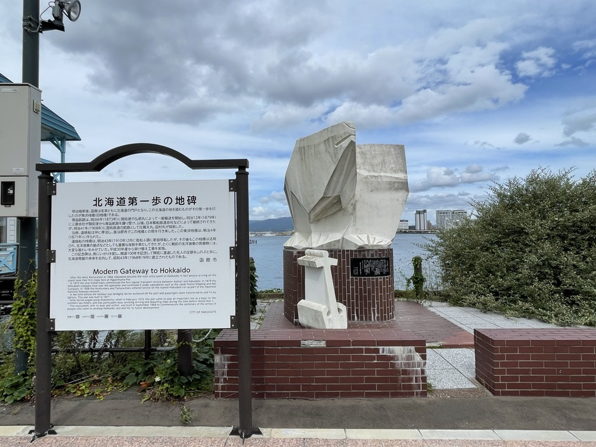

The last day of the Hokkaido car trip. Late last night I'd driven from Shakotan back to Hakodate; this morning starts with breathing in the morning air. The Hakodate Morning Market, Goryōkaku, and a final walk through the city before heading home.
Hakodate Morning Market — squid fishing in the morning
Right next to Hakodate Station, the Hakodate Morning Market lines up fresh seafood — a classic Hakodate stop. From early in the morning it's busy with tourists, with stalls selling crab, sea urchin, and salmon roe.

One of the market's signatures is "live squid fishing." You hook a squid yourself from a tank and the staff prepare it on the spot. A clear-bodied squid turning into translucent sashimi in front of you — an experience that brings the act of taking a life into focus.

Goryōkaku — the star-shaped fortress
From the market I went to Goryōkaku. Japan's first Western-style fortress, with its distinctive five-pointed star formed by five bastions — a shape you really only appreciate from above. So everyone goes up the Goryōkaku Tower. From the deck, the green moat traces the star-shape exactly as designed.

At the end of the Edo period, the remnants of the Tokugawa shogunate forces under Enomoto Takeaki holed up here, and this became the stage for the final battle of the Boshin War — the Battle of Hakodate. Today it's a green park; locals were taking quiet walks around the moat.
Lucky Pierrot, again
Lunch was Lucky Pierrot for the second time. Two visits in one Hakodate trip. The first day's Chinese Chicken Burger was so good that on the last day I tried a different menu at a different branch. For the people of Hakodate, this really is part of everyday life.

"First Step on Hokkaido" Monument — closing the trip
Before leaving, a stop at the "First Step on Hokkaido" Monument at the Hakodate port. From the Meiji era onward, people coming from the main island on the Seikan ferry first stepped ashore here. The "gateway" without which Hokkaido's history can't be told remains as a monument.

Now that the Shinkansen makes Hokkaido easy to reach, the meaning of this monument may have faded a little. But standing there looking out at the Tsugaru Strait, the feelings of those who crossed the sea to a new land suddenly feel close.
From Hakodate Station, Shinkansen home. Three nights and four days, close to 1,000 km of driving — a Hokkaido summer ends here.
A motorcycle is a trip you feel in your body. A car is a trip you take in your head. Same Hokkaido, different vehicle, different way of seeing it. Next time, the bike again.